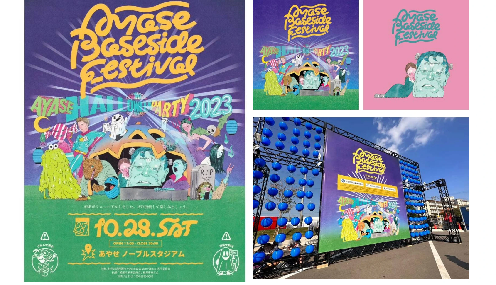

文化
Ayase Baseside Festival

PROJECT INFORMATION
綾瀬市の地域フェスティバル「Ayase Baseside Festival」。企画・デザイン・Web・イラストに関わった実績です。
01 / 背景とテーマ
輪郭を与える
綾瀬市の地域フェスティバル「Ayase Baseside Festival」。企画・デザイン・Web・イラストに関わった実績です。
02 / SCHEMAの担当範囲
全体を整える
SCHEMAの担当範囲は、設計・企画、デザイン、フロントエンド・イラストです。
03 / 取り組みの視点
枠組みをひらく
地域のイベントを、ビジュアルとWebの両方から伝える。催しの表現と情報への入口をつなぐ取り組みです。